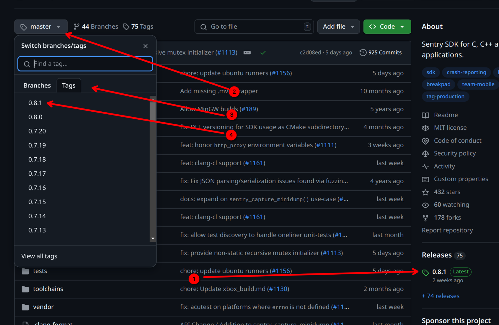

aui.boot#
AUI Boot is yet another package manager based on CMake. If a library uses CMake with good CMakeLists, AUI Boot in 99% cases can provide it for you into your project without additional tweaking. It downloads the library, compiles it and places it in ~/.aui (AUI.Boot Cache Dir) folder for future reuse.
Importing AUI#
See AUI's repository to check out the import script with the latest version.
set(AUI_VERSION v8.0.0-rc.8) # OLD!
file(
DOWNLOAD
https://raw.githubusercontent.com/aui-framework/aui/${AUI_VERSION}/aui.boot.cmake
${CMAKE_CURRENT_BINARY_DIR}/aui.boot.cmake)
include(${CMAKE_CURRENT_BINARY_DIR}/aui.boot.cmake)
auib_import(
AUI https://github.com/aui-framework/aui
COMPONENTS core views
VERSION ${AUI_VERSION})
aui_link(YOUR_APP PUBLIC aui::core
aui::views)
Prebuilt packages#
AUI Boot is a source-first package manager, however, it can pull precompiled packages instead of building them locally. At the moment, GitHub Releases page with carefully formatted archive names is the only supported option. AUI follows these rules, so AUI Boot can pull precompiled package of AUI.
To use a precompiled binary, you must specify a tag of a released version from
releases page (for example, v8.0.0-rc.8 or v7.0.0-rc.2). These packages
are self-sufficient, i.e., all AUI's dependencies are packed into them, so it is the only downloadable thing you need to
set up a development and building with AUI.
If you would like to force AUI Boot to use precompiled binaries only, you can set AUIB_FORCE_PRECOMPILED:
This way AUI Boot will raise an error if it can't resolve dependency without compiling it.
If usage of precompiled binaries break your build for whatever reason, you can set AUIB_NO_PRECOMPILED:
This way AUI Boot will never try to use precompiled binaries and will try to build then locally.
CI caching#
No matter using precompiled binaries or building them locally, it's convenient to cache ~/.aui (AUI.Boot Cache Dir) in your CIs:
This snippet is based on GitHub's cache action example.
GitHub used npm's package-lock.json in their example's primary key (key). We've adapted their example to AUI Boot
and use CMakeLists.txt, as dependencies' versions are "locked" there.
Using a stricter primary key key with a bunch of additional keys restore-keys is essential. If a cache hit occurs
on the primary key, the cache will not be uploaded back to GitHub cache so your primary key must differ when you
update dependencies.
Don't worry updating dependencies: GitHub cache action will restore the cache by using one of
fallback keys restore-keys in such case, so you would not lose build speed up. Additionally, since the cache hit
occurred on non-primary key, the newer cache will be uploaded to GitHub so the subsequent builds will reuse it.
Importing 3rdparty libraries#
For a maintained list of auib_imported libraries, please visit https://github.com/aui-framework/boot.
auib_import(Boost https://github.com/boostorg/boost/releases/download/boost-1.84.0/boost-1.84.0.tar.xz
ARCHIVE
CMAKE_ARGS -DBOOST_ENABLE_CMAKE=ON
)
aui_link(${PROJECT_NAME} PRIVATE Boost::boost)
AUI Framework has a lot of modules and functionality, however, it never pretends to be all-in-one solution for everything. We value quality over quantity. It is just a basis (framework), where you are free to put whatever building blocks you want, and we encourage you to do so, particularly, by using 3rdparty libraries. Just don't forget to obey other projects' licensing conditions, which are, in common, pretty much applicable even for proprietary software.
As was said in the beginning of this page, if a library has a good CMakeLists.txt (which mostly true for all popular
C++ libraries), it can be imported with AUI.Boot:
# importing Sentry with AUI.Boot
auib_import(sentry https://github.com/getsentry/sentry-native
VERSION 0.8.1
CMAKE_ARGS -DSENTRY_BACKEND=crashpad)
aui_link(YOUR_APP PUBLIC sentry::sentry)
The first argument to auib_import is the library name, which is then passed to CMake's find_package in order to
import the library to your project. So, valid library name should be specified. You can obtain the library name from the
following places:
- In common, CMake package matches repository name on GitHub.
- From library's
README. - If library name is incorrect, AUI.Boot prints the following message:
Take a look on the last line:
sentry is a valid library name that should have been passed to auib_import.
The second argument to auib_import is the URL to the library's repository. You can copy&paste it from address bar from
your web browser.
The VERSION argument is tag name or hash name. You can copy&paste the latest release version name from GitHub Releases
page of the library (1), or discover their tags (2,3,4):

The optional CMAKE_ARGS argument is arguments passed to library's CMake configure, another point of customization by
AUI.Boot. These arguments are library specific; their documentation can be found on library's respective documentation
pages. You won't need to use that unless you want an advanced tinkering of the library.
After library is imported to the project, its imported target should be linked to your executable/library. As with
library's name, the name of the imported target probably can be found in library's README. Additionally, starting from
CMake version 3.21, AUI.Boot prints a handy line on configure time when a library is imported:
Imported: sentry (sentry::sentry) (/home/.../.aui/prefix/sentry/7542ab4956cac4e96fe399e976906221) (version e1ba734)
Here, you can see the imported target(s) name in braces, that one should be used with
aui_link/target_link_libraries.
The complete library import boilerplate is:
CMakeLists.txt:
# importing Sentry with AUI.Boot
auib_import(sentry https://github.com/getsentry/sentry-native
VERSION 0.8.1
CMAKE_ARGS -DSENTRY_BACKEND=crashpad)
aui_link(YOUR_APP PUBLIC sentry::sentry)
src/main.cpp:
#include <sentry.h>
AUI_ENTRY {
sentry_options_t *options = sentry_options_new();
sentry_options_set_dsn(options, "https://YOUR_KEY@oORG_ID.ingest.sentry.io/PROJECT_ID");
sentry_init(options);
// your application code …
sentry_close();
};
For more libraries, please visit https://github.com/aui-framework/boot.
How to fix "Could not resolve dependency" error#
Common scenario:
- Remove ~/.aui (AUI.Boot Cache Dir)
- Remove your build directory
And try again.
"looks like a config file does not exist for your project"#
This means that library's maintainer didn't bother about handling cmake --install properly. The best option in
this scenario will be forking the library and append their CMakeLists.txt on your own.
You can consult with Conan Recipes or
Vcpkg Ports to see how they have workarounded the broken
CMakeLists.txt of the library.
"did you mean PACKAGE_NAME?"#
You have mispelled the package name (the first argument to auib_import). Please change the first argument to
auib_import to PACKAGE_NAME.
"Imported target ... depends on an out-of-tree file"#
The library's maintainer have misused CMake. Follow one of possible options provided by AUI.Boot or fix the
library by forking it. You can consult with
Conan Recipes or
Vcpkg Ports to see how they have workarounded the broken
CMakeLists.txt of the library.
Fixing 3rdparty library's CMakeLists.txt#
As was mentioned, AUI.Boot might fail to import a 3rdparty library. Reasons include:
- Misusage of CMake. Mostly, this applies to CMake's
installfamily of commands. Some library maintainers might forget to configure CMake so other CMake projects can actually use their library.
We can't blame them because making proper CMake install export is not an out-of-the-box feature and requires proper knowledge with testing. See this for opinionated guidelines. 2. Lack of CMakeLists.txt. Some libraries might not even use CMake either (mostly in favor to Makefile).
For these reasons, you might want to fix the CMakeLists.txt on your own by forking them. AUI Project does it for some
of its dependencies:
- backtrace: implement CMakeLists.txt over Makefile: https://github.com/ianlancetaylor/libbacktrace/compare/master...aui-framework:libbacktrace:master
- zlib: arbitrary fixes: https://github.com/madler/zlib/compare/master...aui-framework:zlib:master
- OpenSSL: arbitrary fixes: https://github.com/janbar/openssl-cmake/compare/master...aui-framework:openssl-cmake:master
Also, you can consult with Conan Recipes or
Vcpkg Ports to see how they have workaround the broken
CMakeLists.txt of the library.
Using AUI Boot without AUI#
AUI Boot does not have any hard dependencies on AUI, so it can be used to manage dependencies on non-AUI projects.
set(AUI_VERSION v8.0.0-rc.8)
file(
DOWNLOAD
https://raw.githubusercontent.com/aui-framework/aui/${AUI_VERSION}/aui.boot.cmake
${CMAKE_CURRENT_BINARY_DIR}/aui.boot.cmake)
include(${CMAKE_CURRENT_BINARY_DIR}/aui.boot.cmake)
Importing project as a subdirectory#
See ADD_SUBDIRECTORY
CMake commands#
auib_import#
If needed, downloads and compiles project. Adds an IMPORTED target. Built on top of find_package.
Signature#
auib_import(<PackageName> <URL>
[ADD_SUBDIRECTORY]
[ARCHIVE]
[COMPONENTS components...]
[CONFIG_ONLY]
[CMAKE_WORKING_DIR workingdir.txt]
[PRECOMPILED_URL_PREFIX <PrecompiledUrlPrefix>]
[LINK <STATIC|SHARED>]
[REQUIRES dependencies...]
[VERSION version])
Note
This command copies *.dll, *.so and *.dylib (in case of shared libraries) alongside your executables during
configure time. See Runtime dependency resolution for more info.
PackageName#
Specifies the package name which will be passed to find_package. See Importing 3rdparty libraries.
URL#
URL to the git repository of the project you want to import.
ADD_SUBDIRECTORY#
See also: AUIB_
Uses add_subdirectory instead of find_package as the project importing mechanism.
Potential use case of this is when the dependency fails to provide proper CMake install, making find_package unusable.
If you don't care about polluting your own build tree with dependency's targets - it is a good alternative to fixing
their CMake install on your own, which is a challenging task.
This action disables usage of precompiled binary and validation.
ARCHIVE#
The provided URL is pointing to zip archive instead of a git repository.
For large dependencies, this might be faster than pulling whole repository.
CONFIG_ONLY#
Forces find_package to use the config mode only.
VERSION#
Commit hash, tag or branch name to checkout.
When no version is specified, AUI.Boot defaults to using the latest version from the main branch. Once AUI.Boot
discovers and locks onto a version, it will never automatically update that version, even across rebuilds. If you
specify a branch name in the VERSION parameter instead of a specific tag or commit, the same semantics take place.
Branch names point to moving targets - the same branch name could reference different commits at different times. Using a specific tag or hash ensures you get exactly the same code every time you build.
AUI.Boot will emit a warning encouraging the use of either:
- Tags (e.g.
v1.2.3) - ideal for released versions - Commit hashes (e.g.
8b0e838b) - perfect for specific commits or work-in-progress changes
Note
Despite this argument is optional, we still encourage you to use it, to "lock" the version. This makes your builds precisely reproducible on other machines.
COMPONENTS#
List of components to import which will be passed to find_package. Also, passed as semicolon-separated list to
dependency's CMakeLists.txt via AUIB_COMPONENTS variable.
CMAKE_WORKING_DIR#
Run cmake in specified directory, in relation to the pulled repo's root directory.
PRECOMPILED_URL_PREFIX#
Instead of building the dependency from sources, try to import the precompiled binaries first.
LINK#
Overrides BUILD_SHARED_LIBS of the dependency, specifying SHARED or STATIC linking.
REQUIRES#
List of the package dependencies. Every dependency's root variable (${DEPENDENCY}_ROOT) is checked for existence and
validness, then it passed directly to auib_imported target (via ${DEPENDENCY}_ROOT).
It is useful when some package root is implicitly defined in your project somewhere and aui.boot does not know about it, thus does not forward.
Variables#
See AUI Configure Flags on how to set variables.
AUIB_ALL_AS (=FALSE|TRUE)#
Equivalent of setting AUIB_
AUIB__AS (=FALSE|TRUE)#
Uses add_subdirectory instead of find_package as the project importing mechanism. This means that the library
becomes a part of your project, within your build/ directory. This allows changing the library's code seamlessly.
It is useful for library developers. They can use consumer's project to change something in their library, without
changing CMakeLists.txt of the consumer's project. Setting AUIB_<PackageName>_AS is an equivalent of passing
ADD_SUBDIRECTORY to auib_import.
This action disables usage of precompiled binary and validation.
Usage:
Where 'LIB' is library project name. For example, to import AUI as a subdirectory:You can switch AUIB_AUI_AS on an existing build tree, AUI.Boot is capable of switching on-the-fly.
During the execution of the command above, the location of the LIB is printed:
Which points to the LIB's source tree used to build the consumer's project. You can change anything in that directory as part of your development workflow, and these changes will reflect immediately on the consumer's project.
Your changes will not be overridden by further CMake invocations.
You can cd and commit changes right from that directory as you complete your work on the library:
cd /home/user/.aui/repo/aui/as/v8.0.0-rc.1/aui
# don't forget to checkout, we are in detached HEAD state
git checkout -b feat/a-new-feature
git commit -m "a new feature"
git remote set-url origin git@github.com/your-name/your-aui-fork
git push
Note
To have write access to the library's repository, it's likely you'll need to make a fork. Optionally, you can upstream your changes in the future.
Since you have updated the library, you may want to share your own version of the library within your project. To do this, you need to:
- Acquire the commit hash:
- In your
CMakeLists.txt, make sure the URL points to your fork, if any: - Specify commit hash in
VERSIONfield: - Commit and push to your project
Note
It is common to delete a feature branch after merging. Be careful: AUI.Boot can't find a commit if it was deleted from a repository.
AUIB_DISABLE (=FALSE|TRUE)#
Disables aui.boot. All calls to auib_import are forwarded to find_package.
AUIB_SKIP_REPOSITORY_WAIT (=FALSE|TRUE)#
Disables "Waiting for repository".
AUIB_NO_PRECOMPILED (=FALSE|TRUE)#
Disables precompiled binaries, building all dependencies locally. You may want to set up CI caching.
AUIB_FORCE_PRECOMPILED (=FALSE|TRUE)#
Disables local compilation. If a precompiled binary was not found, a configure-time error is raised.
AUIB_PRODUCED_PACKAGES_SELF_SUFFICIENT (=FALSE|TRUE)#
The AUIB_PRODUCED_PACKAGES_SELF_SUFFICIENT flag can be used to enable self-sufficiency of packages produced with AUI
Boot. This means that the dependencies required for building these packages are included in the package (tar.gz)
archive in the deps/ dir.
See Producing packages with dependencies managed by AUI Boot
AUIB_VALIDATION_LEVEL#
Applies a set of checks on each dependency pulled by AUI.Boot. These checks verify that the dependency follows so-called modern CMake practices. Raising this value may help to localize some errors related to the dependency in your build system that would have appeared somewhere in the future unexpectedly.
It is a forced measure due to lack of proper CMake usage.
All AUI's dependencies are marked with the highest validation level.
Defaults to 1.
AUIB_VALIDATION_LEVEL 0#
All checks are disabled.
AUIB_VALIDATION_LEVEL 1#
Covers scenario: cmake --install . of dependency produces a valid local CMake package installation.
Requirements:
- Dependency's installation in directory
Acan be produced withcmake --install . --prefix=A. Afind_packagecall with dependency's name is capable of importing the dependency's into the consumer's build system. - Targets created as a result of calling
find_packageon the dependency can and should define properties so the consumer can actually use the functionality provided by the dependency. If such property refer to a local file, this file must be located in AUI.Boot's cache dir (~/aui). In case of dependency's dependencies (aka grand dependencies), those be imported by a priorauib_import.
As an exception, a system file can be mentioned via CMake target. System packages must be wrapped with
auib_use_system_libs_begin/auib_use_system_libs_end in such scenario.
@dontinclude aui.views/CMakeLists.txt
@skip auib_use
@until auib_use_system_libs_end
AUIB_VALIDATION_LEVEL 2#
Covers scenario: cmake --install . of dependency produces a relocatable binary package.
Requirements:
- Implies
VALIDATION_LEVEL 1. - Targets and variables created as a result of calling
find_packageon the dependency cannot contain absolute paths, with an exception to commonly available system files. - If a target depend on another library, it should express it by referring on exported target of that library instead of referring to its file.
target_link_libraries(awesomelib PUBLIC ${ZLIB_LIBRARIES}) # WRONG!
target_link_libraries(awesomelib PUBLIC ZLIB::ZLIB) # GOOD!
!!! note
AUI.Boot is capable of replacing absolute paths to libraries by their respective target names in order to support
legacy libraries.
Diamond Shape Graphs#
Case 1#
For example, your application uses aui.core module, which actually uses ZLIB:

When you also want to use ZLIB.
Without AUI.Boot, you'd place (and compile) another copy of ZLIB whose version may differ from ZLIB that aui.core uses, causing you to stuck with dependency hell:

With AUI.Boot, you'd not even use AUI.Boot's functions! Just use find_package(ZLIB REQUIRED) and link it to your application with target_link_libraries(YourApplication PRIVATE ZLIB::ZLIB), because AUI.Boot forwards location of used dependencies to your project. Your application and AUI are using the same ZLIB:

Case 2#
Another case is OpenSSL between aui.crypt and aui.curl:

Because libcurl is not a part of AUI, it uses standard CMake's function to find OpenSSL (find_package).
Producing packages with dependencies managed by AUI Boot#
AUI distributions published on our GitHub releases page are produced with help of AUI Boot.
CMake-driven projects produce package configuration with configure_file:
Inside of aui-config.cmake.in, there's a line:
AUIB_DEPS contains cmake commands to resolve dependencies of your project. This variable is populated by auib_import
calls inside your project during configure time. AUIB_DEPS contains auib_import calls.
As was mentioned, AUI Boot requires specially formatted (precompiled) package names to use them. For this to work, you
can call auib_precompiled_binary inside of your root CMakeLists.txt which configures cpack to produce tar.gz
with properly formatted name.
At last, use cpack to produce a package.
Importing AUI without AUI Boot#
In some cases, AUI Boot might not cover your particular needs, and you would like to build without it. It is still not a recommended way of using AUI, as it is not fully covered with tests, and you're basically trying to complicate your life by hardcoding paths in your CMake lists and thus making hardly reproducible projects. Consider asking questions about AUI Boot on our GitHub page, and we'd help to adapt AUI Boot to your use case.
Building AUI without AUI Boot#
AUIB_DISABLE (=FALSE|TRUE) CMake configure flag can be used to replace auib_import calls to find_package. In this scenario
you will need to resolve AUI's dependencies in some other way (i.e, by using Conan).
Using AUI distributions with find_package#
AUI distributions published on our GitHub releases page are
self-sufficient. That is, they have AUI's dependencies bundled, so they can be used by find_package, without even
requiring AUI Boot.
|
~/.aui (AUI.Boot Cache Dir)#
It is a directory located in your home directory (can be changed with AUIB_CACHE_DIR). This directory contains dependencies' source code and installation artifacts of each dependency. AUI.Boot looks up there for built libraries or their source code in order to reduce build latency and bandwidth.
If a dependency is not present in the cache, AUI.Boot will download a precompiled binary or build it from source, so the
subsequent auib_import invocations can reuse that even across different projects.
On a CI/CD, you can cache this directory to drastically improve build times.
Structure#
~/.aui/prefix#
Contains dependencies produced by cmake -B build -S ., cmake --build build and
cmake --install build --prefix=~/.aui/prefix/../ series of commands, potentially invoked inside auib_import.
Dependency installations are located in following path: ~/.aui/prefix/<PackageName>/<BUILD_SPECIFIER>.
<BUILD_SPECIFIER> is a special hex string that identifies the build configuration, similarly to Conan's
package_id. <BUILD_SPECIFIER> is a hashed string
that includes information such as version, platform, architecture, or being a static or a shared library. When something
changes in this information, it produces a new <BUILD_SPECIFIER> because it represents a different binary.
Here's how exactly it is computed:
|
~/.aui/repo#
Contains dependencies source code (if any), downloaded by auib_import.
~/.aui/repo/<PackageName>/src- source code of<PackageName>. If it is a git repository, AUI.Boot will try to checkout a specific version first instead of cloning the whole repo again.~/.aui/repo/<PackageName>/src/FETCHED- indicates the latest download is successful.~/.aui/repo/<PackageName>/build-<PackageName>build directory. Cleaned up after a successful installation.
If the dependency imported as a subdirectory, these paths are used instead:
~/.aui/repo/<PackageName>/as/<VERSION>/<PackageName>- a copy of source to be used by CMake'sadd_subdirectory. The second<PackageName>helps IDEs such as CLion to identify dependency name.~/.aui/repo/<PackageName>/as/<VERSION>/<PackageName>/FETCHED- indicates the latest download is successful.~/.aui/repo/<PackageName>/as/<VERSION>/build- build directory.
~/.aui/crosscompile-host#
In case of Crosscompiling (Android and iOS), contains AUI.Boot sub cache for the host system.
~/.aui/repo.lock#
Lock file of auib_import to forbid multiple parallel processes to modify auib_import.
Philosophy behind AUI Boot#
AUI Boot follows AUI Project philosophy, i.e, simplify developers' life and improve experience as far as possible. We were needed a CMake-only solution, so we skipped external generators (i.e., those that introduce additional building layer over CMake).
Despite CMake itself is complex (spoiler: every build system is) but thanks to the complexity CMake actually does the job good enough and its scripting system thankfully allows to download files from internet (and not only that).
Introducing additional building layer literally multiplies the building complexity by two. Moreover, Android targets already introduce such a layer (called Gradle). For example, if we were using Conan, Android building process would have 4 layers: Gradle, CMake, Conan, CMake (yes, 2 CMake layers).
AUI Boot (and CPM) require CMake only and don't involve extra runtime. Build
should be easily reproducible, i.e., invocation of CMake (cmake -S . -B build) is sufficient to set up a dev
environment. No additional tinkering (i.e, downloading and installing external tools or libraries, passing them to
the build) is required, with an exception to application's domain (for example, auth/API keys).
That being said, let's overview alternatives:
- CPM (CMake's missing package manager) - almost perfectly suits our needs but lacks precompiled packages support which renders painful to some of our users.
- vcpkg - external and maintained by Microsoft. Requires additional setup and
overwriting
CMAKE_TOOLCHAIN_FILE. In case of Android, additional tinkering with Gradle script is required. - conan - external, requires Python runtime and knowledge. Using Conan leads to 3 browser tabs always opened: Python docs, Conan docs and CMake docs. In case of Android, additional tinkering with Gradle script is required. Pushes Artifactory which is a paid self-hosted solution but thanks to that offers free large repository of precompiled packages. Conan is slowly becoming a de facto standard for C++ so we're looking forward for adding conan support (without dropping AUI Boot).
- CMake's FindPackage/FetchContent/ExternalProject - limited, involve a lot of boilerplate, can't be tweaked from configure-time variables, lack precompiled binaries.
AUI is a C++ project, thus it should use CMake for AUI itself and AUI-based applications. Configure? cmake ... Build?
cmake --build .. Test? ctest .. Package? cpack .. CMake offers enough functionality for various use cases. Let's
avoid creating an uncomfortable situation by involving snakes in the process of developing C++ applications, we have
our own great tools already.